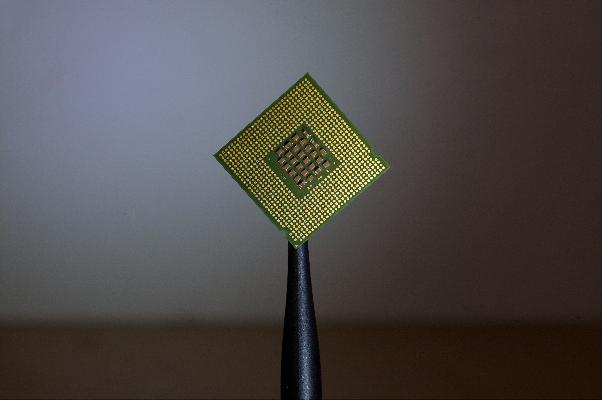

Portfolio
Check out some of my interesting work!
-
SPECIAL Processor Project
In computer architecture, I worked with a team to build and simulate a custom processor. Our processor, named SPECIAL, was built with an accumulator architecture and was designed to run a relative prime algorithum, in addition to normal functionality. In order to use our processor, we also designed a custom assembly language for it to run. Full documentation for the project can be found at the link above.
Photo by Brian Kostiuk on Unsplash
-
Joust Replica Project

With a small group of other students, I helped replicate the arcade game Joust in java. We designed the applicaion to conform to Object Oriented Design Principals, including a full UML diagram for our design. The app was sucessful, but remains undeployed for now.